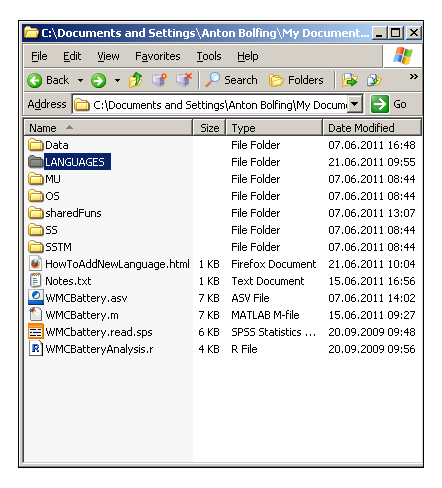
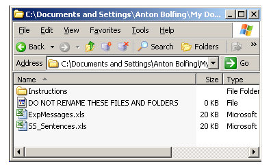
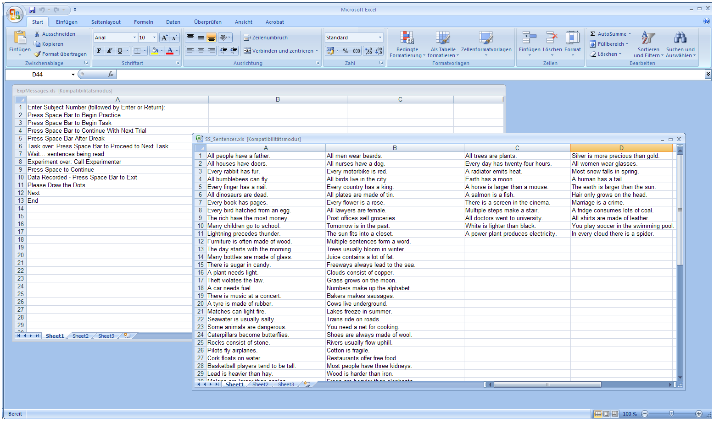
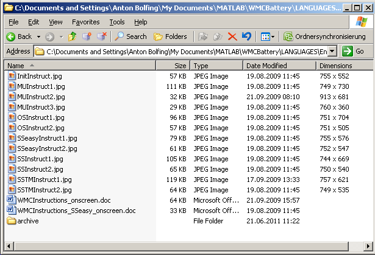
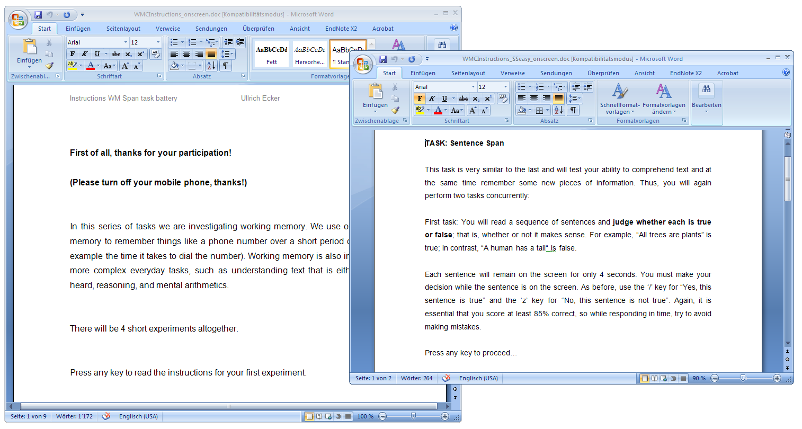

How To Implement A New Language In The WMCBattery
How To Add A New Language To The WMCBattery
Adding a new language to this "Working Memory Capacity Battery" is not too difficult, but associated with some effort. Take the time for some translation work.
Open the folder "LANGUAGES"

Copy one of the existing language folders
The "LANGUAGES" directory contains folders labelled according to all languages implemented so far. The original languages for the test battery are "English_Easy" and "English_Hard" as well as "Chinese". We suggest to translate these in order to avoid ongoing translation error propagation.

Copy the language folder(s) that fit most with your language and relabel it accordingly.
IMPORTANT!: Make sure not to translate "_Easy" and "_Hard" independently of the language you are implementing. It is important to name the folder(s) "YourLanguage_Easy" or "YourLanguage_Hard":
Translate the two Excel files

IMPORTANT!: Do not change the names of the Excel-files. Just translate their contents:

Translate the Instructions
Open the "Instructions" folder

Translate the instructions
Translate all text in the two .doc files (WMCInstructions_onscreen.doc and WMCInstructions_SSeasy_onscreen.doc). Instruction slides as displayed in the test battery are separated by page breaks.

Convert instruction slides to JPEG images
Convert the single pages of the .doc files into .jpg. We recommend to take screenshots of the .doc pages and rescale them using an image editing program such as GIMP (new tab).
IMPORTANT! Make sure that ...
- ... you label the .jpg images in exactly the same way as they were labelled in the original language, and ...
- ... the image dimensions do not exceed the screen size of the displays you will run the WMCBattery with. We recommend a image dimensions between 750x500 and 1300x1000 pixels.
You're DONE
Start the test battery (WCMBattery.m) and choose the newly added language.
Test it thoroughly!
Wie Sie eine neue Sprachversion der WMCBatterie hinzufügen können
Wie Sie eine neue Sprache der WMCBatterie hinzufügen können
Dieser "Testbatterie für Arbeitsgedächtnisleistung" eine neue Sprachversion hinzuzufügen ist nicht sehr schwierig, geht aber durchaus mit einem gewissen Übersetzungsaufwand einher.
Öffnen Sie den Ordner "LANGUAGES"
Kopieren Sie einen bestehenden Sprachordner
Der Ordner "LANGUAGES" enthält Ordner, die entsprechend der bisher implementierten Sprachen beschriftet sind. Die ursprünglich implementierten Sprachen sind English_Easy, English_Hard und Chinese. Um Fehler durch wiederholtes Übersetzen zu verhindern, empfehlen wir diese Sprachen als Grundlagen für weitere Übersetzungen zu verwenden.
WICHTIG!: Übersetzen Sie nicht "_Easy" and "_Hard" der Ordnernamen, sprachunabhängig. Nennen Sie die neuen Ordner "IhreSprache_Easy" oder "IhreSprache_Hard":
Übersetzen Sie die beiden Excel Dateien
WICHTIG !: Belassen Sie Namen der Excel-Dateien unverändert. Übersetzen Sie ausschliesslich deren Inhalte/Einträge:
Übersetzen Sie Instruktionen
Öffnen Sie den Ordner "Instructions"
Übersetzen Sie die Instruktionen
Übersetzten Sie die beiden Dokumente WMCInstructions_onscreen.doc und WMCInstructions_SSeasy_onscreen.doc vollständig. Die Instruktionsseiten, wie Sie in der Testbatterie angezeigt werden, sind durch Seitenumbrüche voneinander getrennt.
Konvertieren Sie die Instruktionsseiten in JPEG Bilder
Konvertieren Sie die einzelnen Seiten der .doc Dateien in .jpg. Wir empfehlen, dies mittels Screeshots und einer Bildbearbeitungssoftware, wie GIMP (neue Tab) zu tun.
WICHTIG ! Vergewissern Sie sich, dass ...
- ... Sie die .jpg-Bilder in exakt derselben Weise beschriften wie sie es in der ursprünglichen Version waren, und dass ...
- ... die Bildgrössen die Bildschirmgrössen Ihrer Testumgebung nicht überschreiten. Wir empfehlen Bildgrössen zwischen 750x500px und 1300x1000 Pixeln.
FERTIG !
Sie können die Testbatterie nun starten (WMCBattery.m) und die neue Sprache auswählen.
Testen Sie die neue Version ausgiebig.